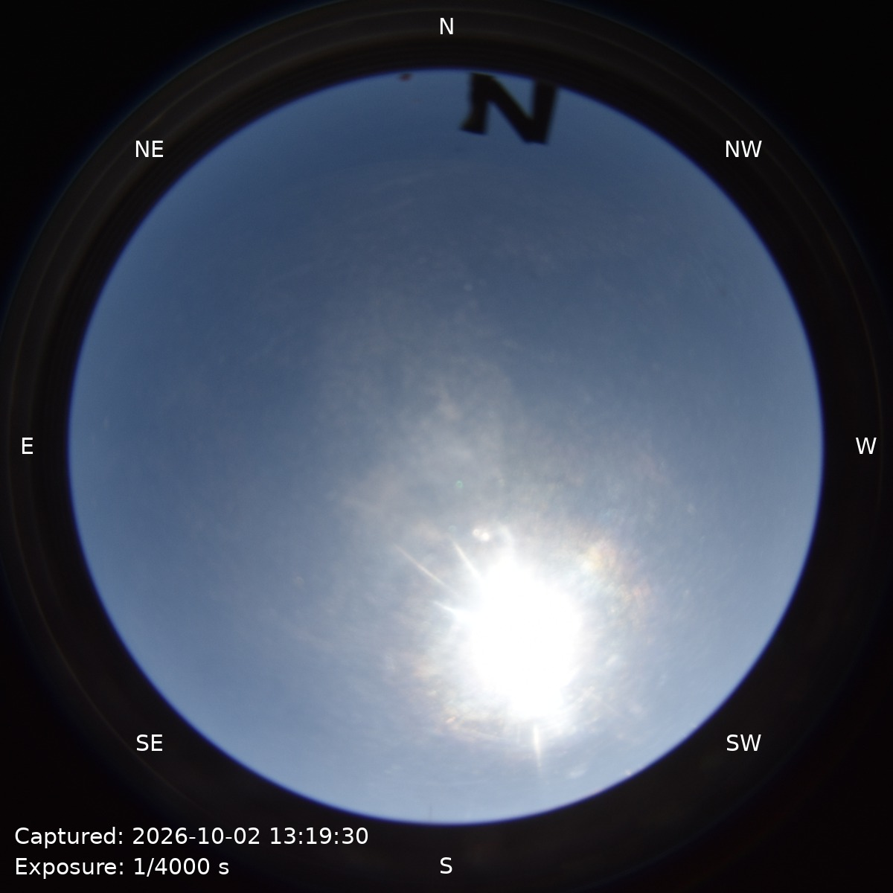

Sky Camera
全天カメラ

Dome Camera（なんとかする）
Iriki Observatory
Iriki Observatory Weather PageSky Camera

Dome Trend

Weather Forecast
MET NorwayのLocationforecast APIをもとに、入来観測所付近の今後24時間の雲量、降水量、湿度、風速、気温を表示します。
24 Hours
時間ごとの天気情報を取得しています。
24時間グラフ: Weather data by MET Norway
Instrument
使用可能
使用可能
現在は搭載されていません。
Instrument Temperature
Last Update :
| Dome | -- K（-- ℃） | ||||||
|---|---|---|---|---|---|---|---|
| J Band | -- K | H Band | -- K | Ks Band | -- K | ||
| Cold Head | -- K | Cold Plate | -- K | ||||
| Heat J | ---- | Heat H | ---- | Heat Ks | ---- | Heat CP | ---- |
| Vacuum Level | -- Pa | ||||||

測定日時:

測定日時:

「装置温度チェック」タブを開いたときに、各グラフを最新画像として再読み込みします。
Environment Temperature
ドーム・外気・スカイカメラbox内部の温度をまとめて確認できます。
Dome
-- ℃
最終更新: --
Outside
-- ℃
最終更新: --
Sky Camera Box
-- ℃
最終更新: --
各温度は1分ごとに更新します。データの測定日時は各カードの最終更新を確認してください。
Temperature Trend
各グラフは1分ごとと、このタブを開いたときに再読み込みします。既存のグラフ画像には湿度も併記されています。
グラフ画像を取得できません（bme280_plot_dome1.png）。
グラフ画像を取得できません（bme280_plot_outer.png）。
グラフ画像を取得できません（bme280_plot_camerabox.png）。
Tonight
入来観測所・日本時間（JST）。日没・日の出を基準に、トワイライトフラット取得と観測開始のタイミングを確認できます。（おおよその目安です）
時刻を計算しています。
現在時刻を確認中
帯の色は日中・薄明・夜間を表します。縦線は各イベントの時刻、赤い破線は現在時刻です。観測日は毎朝9時（JST）に切り替わります。